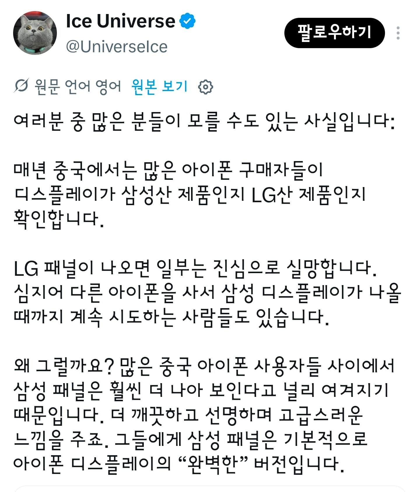
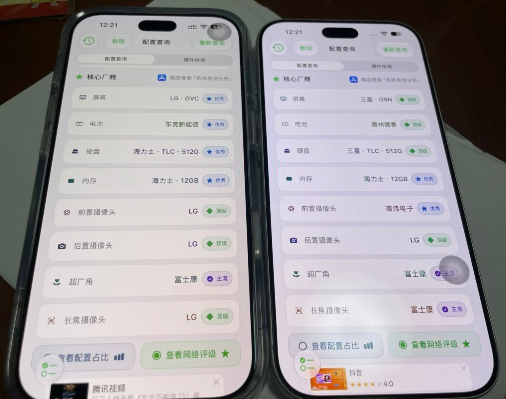

노란 액정 줄까 파란 액정 줄까?
빨간액정 S26 ultra요
그냥 갤럭시 사면 삼성디스플레이 아님?
했는데 저가형은 중국 BOE꺼 쓰네 ㅋㅋ
같은 고가형이어도 아이폰에 들어가는 삼디플이랑 갤럭시에 들어가는 삼디플이 같진 않음
액정 잘모르는데 lg가 삼성보다 하품임?
모바일기기용 소형 OLED는 원래부터 삼성 나와바리였으니...
OLED 기술 초기에 삼성은 작은거 위주로 개발하고 LG는 TV같이 큰거 위주로 파서 모바일쪽은 좀 늦음
규모부터 다른걸로 아는데
누런게 눈에는 더 좋을탠데
그런데 왜 스마트폰 패널은 캘리브레이션을 안하는거임?
캘리 하긴 하는데 일부 특성차이는 안잡히고 남는다고 들었음
boe 아닌게 다행인줄 알아야
그냥 색온도 차이 아니야?
왼쪽은 night shift 킨거 같네
애플 : 저희 기술 준수상 둘다 적합입니다. 즉 정상입니다. 그냥 쓰십쇼. 휴먼
같은 설정에서 편차가 저렇게 크게 날리가 없는데…
한쪽이 불량인가?
boe 랜덤 가챠
프로는 boe 안 들어가
중국 아니어도 아이폰 유저들 사이에서 삼디플 액정을 최고로 쳐주는 분위기가 있긴 하지만 짤처럼 극단적인 차이가 나는 건 절대 아닌데? 짤 왼쪽은 트루톤 켠 상태고 오른쪽은 트루톤 끈 상태 같아 보임
트루톤켜놓고 주작치노 ㅋㅋ
저게 사실이면 애플의 품질관리가 개판인거 아님?
그냥 설정 차이일 듯
애플이 저 꼴을 그냥 둘리가 없지ㅋ
저건 그냥 디스플레이 설정값 일부러 안맞게하고 주작하는거지 ㅋㅋ 애플만큼 디스플레이 품질관리 빡세게 하는회사 없음
회사에서 투모니터 쓰려고 LG모니터 똑같은 제품 똑같은 날짜에 2개 주문했는데 하나는 저렇게 오줌액정이고 하나는 저렇게 퍼런액정이더라 ㅋㅋ 가전은 LG지~ 라고 생각했는데 그것도 다 옛말이더라, 세탁기, 건조기, 로봇청소기 등등 다 삼성이 압살임
화밸은 조정하면 되는거고. 근데 아이폰은 모르겠지만 lg폰은 샤픈 졸라 심하긴했음
왼쪽은 그냥 트루톤 먹인거 아녀?
설정에 색온도 조절하는게 없네 관리자모드 해야하나
뭔 헛소린가 했는데 작성자가 빙냥이네?
걍 엘지가 누런 색감이고 삼성이 퍼런 색감인거 아닌가 싶은데 이건...
휘도나 기타 수율 같은건 애플이 다 검수했을텐데